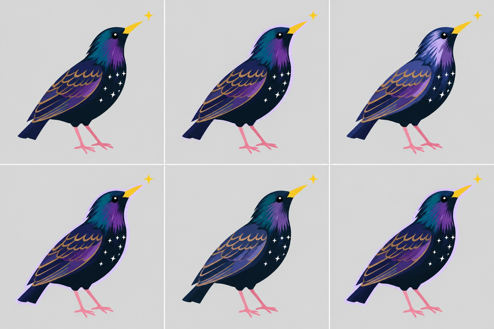
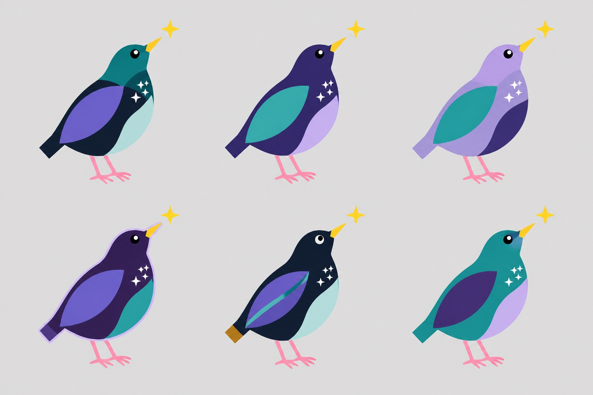
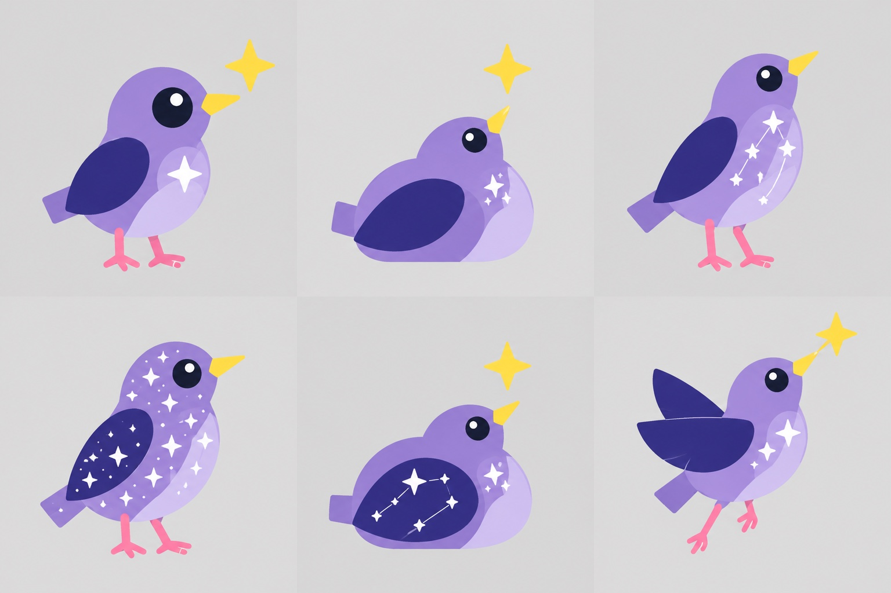

Figma variations of your starling
Figma AI made these from a description of your OG bird. It can't copy a picture exactly, so each one is a little different. Pick any tile by its number (like "B2"), or mix parts ("B2's colors on C2's pose"), and I'll trace it into SVG the same way as the OG.
OG
Your original, for comparison.
A. Real starling colors, detailed
Glossy blue-black with teal and violet sheen, bronze-edged wing feathers and white star speckles. A2, A4 and A6 have the light lavender outline. These have more detail than your OG: feather edges and soft shading.

- A1
- A2
- A3
- A4
- A5
- A6
B. Starling colors, flat like the OG
The same simple flat shapes as your OG, in starling teal, violet, blue-black and lavender. B4 has the light lavender outline, and B5 has a bronze tail tip.

- B1
- B2
- B3
- B4
- B5
- B6
C. Poses and speckles
C1 is bold and simple for tiny sizes. C2 is resting with its legs tucked under, gazing up at the star, with no nest. C3 has a constellation of speckles. C4 is speckled all over like a starry sky. C5 blends the resting pose with a constellation. C6, the wildcard, hops up to touch the star with its beak. These came out rounder and more sparrow-like than your OG, so they'd need the OG's slimmer starling shape.

- C1
- C2
- C3
- C4
- C5
- C6